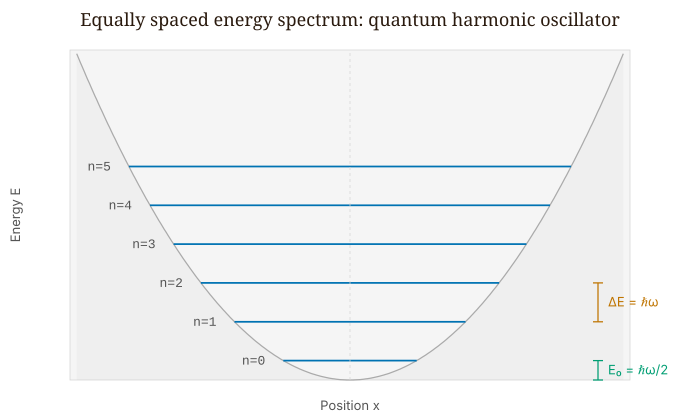
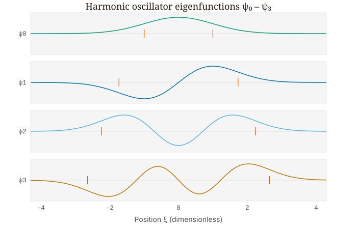
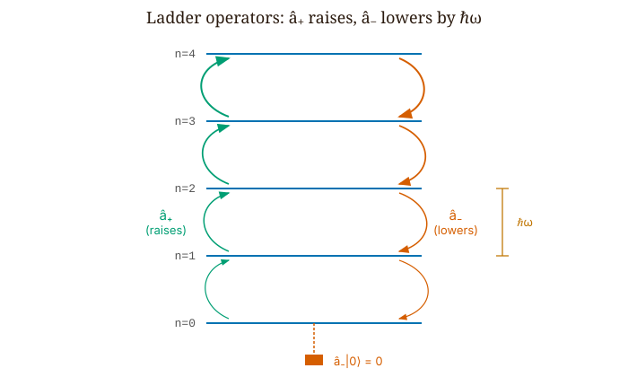
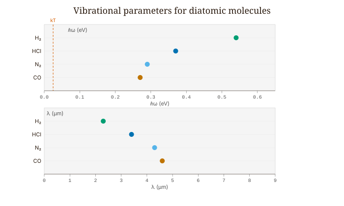

Quantum Mechanics · Volume 1
Chapter 8 — The Quantum Harmonic Oscillator
Imagine pulling a guitar string sideways by a small amount and letting go. The restoring force grows in proportion to the displacement, which is Hooke’s law, and Hooke’s law gives simple harmonic motion. The same structure appears far more generally. Take any smooth potential with a minimum and expand it in a Taylor series about that minimum. The first derivative vanishes, because that is what a minimum means, and the constant term only shifts where we place the energy zero. What survives at leading order is a quadratic:
\[V(x) \approx \frac{1}{2}V''(x_0)\,(x-x_0)^2 = \frac{1}{2}m\omega^2(x-x_0)^2, \tag{8.1}\]
where \(\omega = \sqrt{V''(x_0)/m}\) is fixed by the curvature of the potential at its minimum. For small enough displacements, every stable equilibrium in every physical system behaves as a harmonic oscillator. A guitar string, a diatomic molecule, an electromagnetic mode in a laser cavity, the vibrations of a crystal lattice, the quantized field of the vacuum — all of them reduce to the same Hamiltonian:
\[\hat{H} = \frac{\hat{p}^2}{2m} + \frac{1}{2}m\omega^2\hat{x}^2. \tag{8.2}\]
This is not a narrow special case. It is the generic situation for any quantum system near equilibrium. Solving it once solves every system in the whole class, so the only real question is how to solve it.
8.1 The Ladder-Operator Method
The most direct method is to write \(\hat{p} = -i\hbar\,\partial_x\), substitute it into (8.2), and solve a second-order differential equation. That route works, it produces the Hermite polynomials, and we describe it below. But there is a more elegant method, one that delivers the entire spectrum without our solving any differential equation at all.
Define two operators:
\[\hat{a}_\pm = \frac{1}{\sqrt{2\hbar m\omega}}\!\left(\mp i\hat{p} + m\omega\hat{x}\right). \tag{8.3}\]
These are the raising (\(\hat{a}_+\)) and lowering (\(\hat{a}_-\)) operators, also called ladder operators. We compute the product \(\hat{a}_-\hat{a}_+\) by expanding:
\[\hat{a}_-\hat{a}_+ = \frac{1}{2\hbar m\omega}\!\left(i\hat{p} + m\omega\hat{x}\right)\!\left(-i\hat{p} + m\omega\hat{x}\right). \tag{8.4}\]
The \(\hat{p}^2\) and \(m^2\omega^2\hat{x}^2\) terms reassemble into \(\hat{H}/(\hbar\omega)\). The cross terms give \(im\omega(\hat{p}\hat{x} - \hat{x}\hat{p}) = im\omega(-i\hbar) = m\omega\hbar\), contributing \(1/2\). So:
\[\hat{a}_-\hat{a}_+ = \frac{\hat{H}}{\hbar\omega} + \frac{1}{2}, \qquad \hat{a}_+\hat{a}_- = \frac{\hat{H}}{\hbar\omega} - \frac{1}{2}. \tag{8.5}\]
Subtract:
\[\boxed{[\hat{a}_-, \hat{a}_+] = 1.} \tag{8.6}\]
The bracket \([\hat{a}_-,\hat{a}_+] \equiv \hat{a}_-\hat{a}_+ - \hat{a}_+\hat{a}_-\) is a commutator: it measures how much the outcome depends on the order in which the two operators act, and a nonzero value means the order matters. This single commutator contains the entire algebraic content of the problem. Every energy level, every relation between eigenstates, every expectation value follows from it. In quantum field theory, this same relation — now with \(\hat{a}_-\) as the annihilation operator and \(\hat{a}_+\) as the creation operator — is the opening line of quantum electrodynamics. Here we meet it in the simplest possible setting.
8.2 Climbing the Ladder
Suppose \(|n\rangle\) is an energy eigenstate with \(\hat{H}|n\rangle = E_n|n\rangle\). From the commutator (8.6) and \(\hat{H} = \hbar\omega(\hat{a}_+\hat{a}_- + \tfrac{1}{2})\), we can derive:
\[[\hat{H}, \hat{a}_+] = \hbar\omega\,\hat{a}_+, \qquad [\hat{H}, \hat{a}_-] = -\hbar\omega\,\hat{a}_-. \tag{8.7}\]
Now we ask what energy \(\hat{a}_+|n\rangle\) has:
\[\hat{H}(\hat{a}_+|n\rangle) = (\hat{a}_+\hat{H} + [\hat{H},\hat{a}_+])|n\rangle = (E_n + \hbar\omega)\,\hat{a}_+|n\rangle. \tag{8.8}\]
Applying \(\hat{a}_+\) to an eigenstate produces a new eigenstate whose energy is \(\hbar\omega\) higher. Applying \(\hat{a}_-\) produces one whose energy is \(\hbar\omega\) lower. Together the operators form a ladder: we can climb up one rung at a time or step down one rung at a time, and each rung sits exactly \(\hbar\omega\) above the one below it.
The ladder cannot descend forever. The Hamiltonian (8.2) is a sum of squares of Hermitian operators, so \(\langle\hat{H}\rangle \geq 0\) in every state. But \(\hat{a}_-\) removes \(\hbar\omega\) each time it is applied, and if we could keep applying it, we would eventually reach negative energies, which is impossible. The way out is that there exists a ground state \(|0\rangle\) that the lowering operator annihilates:
\[\hat{a}_-|0\rangle = 0. \tag{8.9}\]
We apply \(\hat{H} = \hbar\omega(\hat{a}_+\hat{a}_- + \tfrac{1}{2})\) to this state:
\[\hat{H}|0\rangle = \hbar\omega\!\left(\hat{a}_+\underbrace{(\hat{a}_-|0\rangle)}_{=\,0} + \tfrac{1}{2}|0\rangle\right) = \tfrac{1}{2}\hbar\omega\,|0\rangle. \tag{8.10}\]
The ground-state energy is \(E_0 = \hbar\omega/2\). Not zero, but \(\hbar\omega/2\). Starting from \(|0\rangle\) and applying \(\hat{a}_+\) repeatedly:
\[\boxed{E_n = \left(n + \frac{1}{2}\right)\hbar\omega, \quad n = 0, 1, 2, \ldots} \tag{8.11}\]
The spectrum consists of equally spaced levels with gap \(\hbar\omega\), and the ground state sits \(\hbar\omega/2\) above the classical minimum of the potential. We solved no differential equation. The whole spectrum followed from one commutator together with the requirement that the energy be non-negative.

8.3 Zero-Point Energy Is Real
The ground-state energy \(E_0 = \hbar\omega/2 \neq 0\) is not a bookkeeping technicality. Classically, a harmonic oscillator can have zero energy — the particle simply rests at the bottom of the well. Quantum mechanically, the uncertainty principle rules this out. A particle pinned to \(x = 0\) with \(\sigma_x \to 0\) would require \(\sigma_p \to \infty\) by the Kennard inequality \(\sigma_x\sigma_p \geq \hbar/2\). The zero-point energy is the minimum kinetic energy that confinement itself imposes.
This energy has measurable consequences. Liquid helium does not solidify under atmospheric pressure at any temperature, because the zero-point kinetic energy of helium atoms, confined to the spacing between neighbors, exceeds the interatomic binding energy. The atoms cannot settle into a fixed lattice. Helium remains a liquid down to absolute zero precisely because of zero-point motion, not in spite of it.
A still more direct example is the Casimir force between two conducting plates, which arises from the difference in zero-point energies of the electromagnetic modes with and without the plates present. Lamoreaux measured this force in 1997 and found agreement with the theoretical prediction to within five percent. Zero-point energy is not an artifact of the formalism. It comes with a measurable bill, and we can read that bill in the laboratory.
8.4 The Normalized Ladder
The normalized eigenstates satisfy:
\[\hat{a}_+|n\rangle = \sqrt{n+1}\,|n+1\rangle, \qquad \hat{a}_-|n\rangle = \sqrt{n}\,|n-1\rangle. \tag{8.12}\]
The prefactors \(\sqrt{n+1}\) and \(\sqrt{n}\) are essential, not optional. Omit them and every expectation value you compute comes out wrong. They arise because \(\hat{a}_+|n\rangle\) has norm \(\sqrt{n+1}\) (from \(\langle n|\hat{a}_-\hat{a}_+|n\rangle = n+1\)), so dividing by that norm gives the unit-normalized \(|n+1\rangle\).
We can express \(\hat{x}\) and \(\hat{p}\) directly in terms of the ladder operators:
\[\hat{x} = \sqrt{\frac{\hbar}{2m\omega}}\!\left(\hat{a}_+ + \hat{a}_-\right), \qquad \hat{p} = i\sqrt{\frac{m\hbar\omega}{2}}\!\left(\hat{a}_+ - \hat{a}_-\right). \tag{8.13}\]
With these, the expectation values in any energy eigenstate \(|n\rangle\) become straightforward. Since \(\hat{a}_\pm|n\rangle\) is orthogonal to \(|n\rangle\):
\[\langle n|\hat{x}|n\rangle = 0, \qquad \langle n|\hat{p}|n\rangle = 0. \tag{8.14}\]
For \(\hat{x}^2\), we write \(\hat{x}^2 = (\hbar/2m\omega)(\hat{a}_+ + \hat{a}_-)^2\). The terms \(\hat{a}_+^2\) and \(\hat{a}_-^2\) connect \(|n\rangle\) to \(|n\pm 2\rangle\) and contribute nothing. The surviving terms give:
\[\langle n|\hat{x}^2|n\rangle = \frac{\hbar}{2m\omega}\!\left(n + n + 1\right) = \frac{\hbar(2n+1)}{2m\omega}. \tag{8.15}\]
The uncertainty product:
\[\sigma_x\sigma_p = \left(n + \frac{1}{2}\right)\hbar. \tag{8.16}\]
At \(n = 0\): \(\sigma_x\sigma_p = \hbar/2\), the smallest value the Kennard inequality allows, saturated exactly. Among the oscillator’s energy eigenstates, only the ground state saturates the bound; the coherent states we meet later in this chapter share the minimum-uncertainty property.
For the off-diagonal matrix element, \(\langle m|\hat{x}|n\rangle \propto \delta_{m,n\pm 1}\). Position connects only states that differ by a single quantum. This is the selection rule for dipole transitions: only \(\Delta n = \pm 1\) transitions are allowed. That rule is why the vibrational absorption spectrum of an ideal diatomic oscillator is a single line at frequency \(\omega\): every allowed step \(\Delta n = \pm 1\) costs the same energy \(\hbar\omega\), so all the transitions coincide.
8.5 What the Eigenstates Look Like
The algebra hands us the spectrum. The wave functions follow from the condition \(\hat{a}_-|0\rangle = 0\), which in position space reads:
\[\left(\hbar\frac{\partial}{\partial x} + m\omega x\right)\psi_0(x) = 0. \tag{8.17}\]
We solve by separation and normalize:
\[\psi_0(x) = \left(\frac{m\omega}{\pi\hbar}\right)^{1/4}\exp\!\left(-\frac{m\omega x^2}{2\hbar}\right). \tag{8.18}\]
A Gaussian — the same minimum-uncertainty shape we met in Chapter 3, but now appearing as an energy eigenstate of the oscillator rather than as a free-particle wave packet. The distinction matters. The free-particle Gaussian spreads over time, because it is not an eigenstate of the free Hamiltonian. The harmonic-oscillator ground state stays Gaussian forever, because the potential supplies a restoring force that exactly counteracts the tendency to spread.
Higher states are built by applying \(\hat{a}_+\) to \(\psi_0\). Each application multiplies the Gaussian by a polynomial one degree higher in \(x\). Those polynomials are the Hermite polynomials \(H_n(\xi)\), with \(\xi = \sqrt{m\omega/\hbar}\,x\):
\[\psi_n(x) = \left(\frac{m\omega}{\pi\hbar}\right)^{1/4}\frac{1}{\sqrt{2^n n!}}\,H_n(\xi)\,e^{-\xi^2/2}, \tag{8.19}\]
with recursion \(H_{n+1}(\xi) = 2\xi H_n(\xi) - 2n H_{n-1}(\xi)\), starting from \(H_0 = 1\), \(H_1 = 2\xi\).
Two features are worth highlighting. First, \(\psi_n\) has exactly \(n\) nodes: the ground state has none, the first excited state has one, and so on — the same node-counting rule we found for the infinite square well. Second, roughly 16% of the ground-state probability density lies outside the classical turning points \(x = \pm\sqrt{\hbar/m\omega}\). Penetration into the classically forbidden region is not some exotic high-energy phenomenon. It is already present in the very first eigenstate, a standard feature of the quantum ground state.

8.6 Eigenstates Do Not Oscillate
There is a misconception worth clearing up here.
A harmonic oscillator is, classically, an oscillator, so it is natural to expect the quantum version to oscillate as well. But consider the time-dependent eigenstate:
\[\Psi_n(x,t) = \psi_n(x)\,e^{-iE_n t/\hbar}. \tag{8.20}\]
The probability density:
\[|\Psi_n(x,t)|^2 = |\psi_n(x)|^2 \cdot |e^{-iE_n t/\hbar}|^2 = |\psi_n(x)|^2. \tag{8.21}\]
It is static. The phase rotates in the complex plane at frequency \(E_n/\hbar\), but \(|\Psi|^2\) — everything a position detector could ever register — does not change at all. Energy eigenstates are stationary states. If quantum mechanics contained nothing but eigenstates, classical oscillation would never appear.
Classical oscillation lives in superpositions. Take the equal mixture \(|\Psi\rangle = (|0\rangle + |1\rangle)/\sqrt{2}\):
\[|\Psi(x,t)|^2 = \tfrac{1}{2}(|\psi_0|^2 + |\psi_1|^2) + \psi_0\psi_1\cos\!\left(\frac{(E_1-E_0)t}{\hbar}\right). \tag{8.22}\]
The cross term beats at frequency \((E_1 - E_0)/\hbar = \omega\), exactly the classical oscillation frequency. The packet sloshes, but it also deforms: rather than a rigid shape sliding back and forth, it is a superposition whose interference pattern shifts continuously.
The contrast is the whole point. A single eigenstate holds perfectly still, while a superposition of two of them sloshes at the beat frequency \(\omega\). Anything that made a lone eigenstate’s \(|\Psi|^2\) appear to move would have to be an error in the phase bookkeeping, since the rotating phase \(e^{-iE_n t/\hbar}\) cancels exactly when we form \(|\Psi|^2\).
8.7 Coherent States
A coherent state \(|\alpha\rangle\) is the eigenstate of the lowering operator:
\[\hat{a}_-|\alpha\rangle = \alpha\,|\alpha\rangle \tag{8.23}\]
for any complex number \(\alpha\). In the energy basis:
\[|\alpha\rangle = e^{-|\alpha|^2/2}\sum_{n=0}^\infty \frac{\alpha^n}{\sqrt{n!}}\,|n\rangle. \tag{8.24}\]
Coherent states are not energy eigenstates. They are superpositions of all the \(|n\rangle\) with Poisson-distributed weights \(P(n) = e^{-|\alpha|^2}|\alpha|^{2n}/n!\) and mean quantum number \(\langle n\rangle = |\alpha|^2\) — so a coherent state holds no definite number of quanta, only a definite average.
Under time evolution, a coherent state stays a coherent state, with its amplitude simply rotating:
\[\langle\hat{x}(t)\rangle = \sqrt{\frac{2\hbar}{m\omega}}\,|\alpha|\cos(\omega t - \arg\alpha), \qquad \langle\hat{p}(t)\rangle = -\sqrt{2m\hbar\omega}\,|\alpha|\sin(\omega t - \arg\alpha). \tag{8.25}\]
Position and momentum oscillate sinusoidally at frequency \(\omega\), just as they do for a classical oscillator. And the wave packet keeps its shape throughout — \(\sigma_x\sigma_p = \hbar/2\) at all times. The coherent state is the minimum-uncertainty Gaussian riding its classical orbit forever without spreading.
This is the sharpest possible contrast with the free particle of Chapter 4. There, a Gaussian packet with a constant momentum spread broadens without limit, because nothing pulls its spreading components back together. Here the harmonic potential supplies exactly that restoring force, cancelling the dispersion at every instant, so the coherent state keeps its width forever while its center traces the classical orbit. The same minimum-uncertainty Gaussian meets opposite fates, and the difference is entirely the presence or absence of a confining potential.
Roy Glauber introduced coherent states in 1963 to describe the quantum state of laser light. An ideal laser produces field modes in coherent states. The photon-counting statistics of ideal laser light follow a Poisson distribution, not because lasers are classical, but because Poisson is the photon-number distribution of a coherent state. The harmonic-oscillator algebra is not a loose analogy for laser physics; it is the physics of lasers. Glauber received the Nobel Prize in 2005 for making this connection.
8.8 Worked Example — Ladder Algebra for HCl
The HCl molecule vibrates near the bottom of its internuclear potential with \(\omega \approx 5.63 \times 10^{14}\) rad/s and reduced mass \(\mu \approx 1.63 \times 10^{-27}\) kg.
Zero-point energy:
\[E_0 = \tfrac{1}{2}\hbar\omega = \tfrac{1}{2}(1.055\times10^{-34})(5.63\times10^{14}) \approx 2.97\times10^{-20}\ \text{J} \approx 0.185\ \text{eV}. \tag{8.26}\]
Level spacing: \(\hbar\omega \approx 0.37\) eV. Thermal energy at 300 K: \(k_BT \approx 0.025\) eV. Since \(k_BT \ll \hbar\omega\), essentially all HCl molecules are in the vibrational ground state at room temperature. The infrared spectrum shows a single absorption line at \(\lambda = hc/(\hbar\omega) \approx 3.4\ \mu\text{m}\) — precisely what is observed.
Selection rule from ladder algebra. The dipole transition matrix element is \(\langle m|\hat{x}|n\rangle\). Write \(\hat{x} = \ell(\hat{a}_+ + \hat{a}_-)\) with \(\ell = \sqrt{\hbar/2\mu\omega}\). Then \(\hat{a}_+|n\rangle \propto |n+1\rangle\) and \(\hat{a}_-|n\rangle \propto |n-1\rangle\), both orthogonal to any \(|m\rangle\) unless \(m = n\pm 1\). The matrix element is zero for all other transitions:
\[\langle m|\hat{x}|n\rangle = \ell\!\left(\sqrt{n+1}\,\delta_{m,n+1} + \sqrt{n}\,\delta_{m,n-1}\right). \tag{8.27}\]
Only \(\Delta n = \pm 1\) transitions are allowed. The vibrational spectrum is a single frequency, not a forest of lines — a ruler in frequency space, confirmed by the HCl absorption spectrum.
Expectation value \(\langle\hat{x}^2\rangle\) for \(n = 0\), no integrals. From equation (8.15):
\[\langle 0|\hat{x}^2|0\rangle = \frac{\hbar}{2\mu\omega} = \ell^2. \tag{8.28}\]
The root-mean-square displacement of HCl in its ground state is \(\ell = \sqrt{\hbar/2\mu\omega} \approx 7.6\) pm — about 6% of the bond length (0.13 nm). Small, but not zero, and not obtainable by setting \(E = 0\).
8.9 Where the Ladder Leads
It all came from one commutator: \([\hat{a}_-,\hat{a}_+] = 1\). From it we obtained a complete, equally spaced spectrum, the selection rules, the zero-point energy, the coherent states, and the minimum-uncertainty states. The method itself — factor the Hamiltonian into operators whose commutator is a scalar, then derive everything algebraically — is not tied to this one problem.

Angular momentum, taken up later in the series, reappears with a ladder structure of its own: the operators \(\hat{L}_\pm\) obey a different algebra, but the reasoning runs along the same lines — a commutator with \(\hat{L}_z\) fixes the rung spacing, a non-negativity argument terminates the ladder, and the spectrum follows without our solving any differential equation. In quantum field theory, \(\hat{a}_+\) becomes the creation operator that adds one particle to the vacuum. The state with \(n\) photons is \((\hat{a}_+)^n/\sqrt{n!}\) applied to the vacuum, where the vacuum \(|0\rangle\) is exactly the ground state annihilated by \(\hat{a}_-\). The commutator \([\hat{a},\hat{a}^\dagger] = 1\) is the foundation of quantum electrodynamics. This chapter is the template for all of it.
| Molecule | \(\omega\) (\(10^{14}\) rad/s) | \(\hbar\omega\) (eV) | \(E_0 = \tfrac{1}{2}\hbar\omega\) (eV) | \(\lambda = hc/\hbar\omega\) (μm) |
|---|---|---|---|---|
| H₂ | 8.28 | 0.545 | 0.272 | 2.28 |
| HCl | 5.63 | 0.371 | 0.185 | 3.35 |
| N₂ | 4.45 | 0.293 | 0.146 | 4.23 |
| CO | 4.09 | 0.269 | 0.135 | 4.61 |
Table 8.1 — Vibrational parameters of four diatomic molecules, ordered by stiffness. Each \(\hbar\omega\) is the gap between adjacent levels; \(E_0 = \tfrac{1}{2}\hbar\omega\) is the zero-point energy; \(\lambda = hc/\hbar\omega\) is the photon wavelength matching one quantum of vibration. Every spacing dwarfs the room-temperature thermal energy \(k_BT \approx 0.025\) eV — by a factor of about 11 (CO) up to 22 (H₂) — so at 300 K essentially every molecule sits in its vibrational ground state. Note that H₂ and N₂ are homonuclear and have no permanent dipole, so these transitions are infrared-inactive (they appear in Raman scattering instead); HCl and CO, being heteronuclear, absorb directly in the infrared at the wavelengths shown.

Looking Ahead
The next chapter, Chapter 9 — Measurement, Superposition, and the Qubit, finally asks what happens when we look. It states the measurement postulate precisely and applies it to the two-level systems at the heart of quantum computing.
Interactive Simulations
These companion simulations run in the browser and accompany this chapter online.
- Harmonic-oscillator explorer — pick a level n to see the Hermite–Gauss eigenfunction on its ħω rung, the turning points and the forbidden-region tail.
- Coherent-state animator — compare a stationary eigenstate, a sloshing two-state superposition, and a rigid coherent state riding the classical orbit.
Exercises
Warm-up
-
Difficulty: Warm-up — tests the energy spectrum and zero-point energy. An electron is confined in a one-dimensional harmonic trap with \(\omega = 2.0\times10^{15}\) rad/s. (a) Compute the zero-point energy \(E_0\) and the level spacing \(\hbar\omega\), both in eV. (b) What are \(E_1\) and \(E_2\)? © State, in one sentence, the two ways the quantum spectrum differs from a classical oscillator’s continuum of energies. Tests: command of \(E_n = (n+\tfrac{1}{2})\hbar\omega\) and the meaning of the zero-point offset.
-
Difficulty: Warm-up — tests ladder-operator bookkeeping. Using \(\hat{a}_+|n\rangle = \sqrt{n+1}\,|n+1\rangle\) and \(\hat{a}_-|n\rangle = \sqrt{n}\,|n-1\rangle\): (a) evaluate \(\hat{a}_+\hat{a}_-|3\rangle\) and \(\hat{a}_-\hat{a}_+|3\rangle\), and confirm their difference is \(|3\rangle\). (b) Evaluate \(\hat{a}_-|0\rangle\) and explain why it is not simply a state \(|{-1}\rangle\). © Express \(|3\rangle\) in terms of \(|0\rangle\) and powers of \(\hat{a}_+\), including the correct normalization factor. Tests: fluency with the \(\sqrt{n+1}\), \(\sqrt{n}\) prefactors and the floor of the ladder.
-
Difficulty: Warm-up — tests the algebra behind the spectrum. From \([\hat{a}_-,\hat{a}_+] = 1\) and \(\hat{H} = \hbar\omega(\hat{a}_+\hat{a}_- + \tfrac{1}{2})\), derive \([\hat{H},\hat{a}_+] = \hbar\omega\,\hat{a}_+\). Then show in two lines that if \(\hat{H}|n\rangle = E_n|n\rangle\), the state \(\hat{a}_+|n\rangle\) has energy \(E_n + \hbar\omega\). Tests: whether the student can run the commutator argument that makes \(\hat{a}_+\) a raising operator.
Application
-
Difficulty: Application — tests expectation values via ladder operators. For the eigenstate \(|n\rangle\), use \(\hat{x} = \sqrt{\hbar/2m\omega}\,(\hat{a}_+ + \hat{a}_-)\) and \(\hat{p} = i\sqrt{m\hbar\omega/2}\,(\hat{a}_+ - \hat{a}_-)\) to (a) show \(\langle x\rangle = \langle p\rangle = 0\); (b) compute \(\langle x^2\rangle\) and \(\langle p^2\rangle\) without doing any position-space integral; © confirm \(\sigma_x\sigma_p = (n+\tfrac{1}{2})\hbar\) and identify which state saturates the Kennard bound. Tests: using the ladder algebra as a shortcut for expectation values and connecting to the uncertainty floor.
-
Difficulty: Application — tests the dipole selection rule. The dipole transition strength between oscillator states is governed by \(\langle m|\hat{x}|n\rangle\). (a) Using \(\hat{x} \propto (\hat{a}_+ + \hat{a}_-)\), show that this vanishes unless \(m = n\pm 1\). (b) Explain why this makes the vibrational absorption spectrum of a diatomic molecule a single line at frequency \(\omega\) rather than a series of lines. © Real molecules show faint overtone lines near \(2\omega\). What feature, absent from the ideal oscillator, must be responsible? Tests: deriving the \(\Delta n = \pm 1\) rule and recognizing what anharmonicity adds.
-
Difficulty: Application — tests the spectrum for a real molecule. Carbon monoxide vibrates with \(\omega \approx 4.09\times10^{14}\) rad/s. (a) Compute its zero-point energy and level spacing in eV. (b) Compare \(\hbar\omega\) with the room-temperature thermal energy \(k_BT \approx 0.025\) eV, and use the Boltzmann factor \(e^{-\hbar\omega/k_BT}\) to estimate the fraction of CO molecules that are vibrationally excited. © Compute the wavelength of the photon emitted in an \(n = 1 \to 0\) transition and state which band of the spectrum it lies in. Tests: applying the oscillator spectrum to spectroscopy and a Boltzmann population estimate.
Synthesis
-
Difficulty: Synthesis — tests the coherent state as the classical limit. A coherent state is \(|\alpha\rangle = e^{-|\alpha|^2/2}\sum_n (\alpha^n/\sqrt{n!})\,|n\rangle\) with \(\hat{a}_-|\alpha\rangle = \alpha|\alpha\rangle\). (a) Show that the probability of finding \(n\) quanta is Poisson, \(P(n) = e^{-|\alpha|^2}|\alpha|^{2n}/n!\), with \(\langle n\rangle = |\alpha|^2\). (b) Given \(\langle\hat{x}(t)\rangle = \sqrt{2\hbar/m\omega}\,|\alpha|\cos(\omega t - \arg\alpha)\), explain in what sense the coherent state reproduces classical oscillation. © The coherent state keeps \(\sigma_x\sigma_p = \hbar/2\) for all time, unlike the free-particle packet of Chapter 4. In one paragraph, explain why the harmonic potential prevents the spreading that the free packet suffers. Tests: connecting the coherent state to classical motion, Poisson photon statistics, and the role of the potential in suppressing spreading.
-
Difficulty: Synthesis — tests stationary states versus superpositions. Compare the eigenstate \(|0\rangle\) with the superposition \(|\Psi\rangle = (|0\rangle + |1\rangle)/\sqrt{2}\). (a) Show that \(|\Psi_0(x,t)|^2\) is time-independent. (b) Show that for the superposition, \(|\Psi(x,t)|^2\) contains a cross term oscillating at frequency \(\omega = (E_1 - E_0)/\hbar\), and interpret this as the “sloshing.” © Compute \(\langle\hat{H}\rangle\) for the superposition and confirm it is time-independent even though \(|\Psi|^2\) moves. Why does the probability slosh while the energy does not? Tests: the distinction between a stationary eigenstate and a moving superposition, and energy conservation under sloshing.
Challenge
- Difficulty: Challenge — derives the ground state and its forbidden-region penetration. (a) Starting from \(\hat{a}_-|0\rangle = 0\), write the condition in position space as a first-order differential equation for \(\psi_0(x)\) and solve it to obtain the normalized Gaussian \(\psi_0(x) = (m\omega/\pi\hbar)^{1/4}e^{-m\omega x^2/2\hbar}\). (b) The classical turning points for a particle with energy \(E_0 = \hbar\omega/2\) lie at \(x = \pm\sqrt{\hbar/m\omega}\). Write the probability of finding the particle beyond the turning points as an integral, reduce it to a standard error-function form, and show numerically that it is about \(0.16\). © State plainly what it means that roughly \(16\%\) of the ground-state probability lies where a classical particle of the same energy could never be found. Tests: solving the lowering-operator condition for the ground state and quantifying classically forbidden penetration with the error function.
References
- Griffiths, D.J., Introduction to Quantum Mechanics, 3rd ed., §2.3–2.4.
- Sakurai, J.J. and Napolitano, J., Modern Quantum Mechanics, 3rd ed., §2.3.
- Glauber, R.J., “The Quantum Theory of Optical Coherence,” Physical Review 130, 2529 (1963); “Coherent and Incoherent States of the Radiation Field,” Physical Review 131, 2766 (1963).
- Lamoreaux, S.K., “Demonstration of the Casimir Force in the 0.6 to 6 μm Range,” Physical Review Letters 78, 5 (1997).
- DLMF §18, National Institute of Standards and Technology. Hermite polynomials. https://dlmf.nist.gov/18